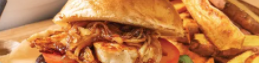

Haloumi and Caramelised Onion Burger

Ingredients
Method
-
Preheat the oven to 240°C/220°C fan-forced. Cut the sweet potato into wedges. Place on a lined oven tray. Drizzle
with olive oil, season with salt and toss to coat. Spread out in a single layer and bake until tender, 25-30
minutes. TIP: If your oven tray is crowded, divide the wedges between two trays.
-
While the wedges are baking, slice the haloumi into 2cm-thick slices (two per person). Thinly slice the brown
onion. Thinly slice the tomato.
-
In a medium frying pan, heat a drizzle of olive oil over a medium heat. Cook the onion, stirring regularly, until
softened, 5-6 minutes. Add the balsamic vinegar(for the onion), the water and brown sugar, then mix well. Cook
until dark and sticky, 3-5 minutes. Transfer to a small bowl.
-
Wash out and dry the frying pan, then return to a medium-high heat with a drizzle of olive oil. When the oil is
hot, pat the haloumi dry with paper towel, then add to the pan. Cook until golden, 1-2 minutes each side.
-
Place the bake-at home burger buns on a wire rack in the oven. Bake until heated through, 3 minutes. Meanwhile,
reserve a handful of the mixed salad leaves for the burgers, then place the rest in a medium bowl. Combine with
the balsamic vinegar (for the salad) and a drizzle of olive oil. Season to taste.
-
Cut the buns in half and spread the bases with the creamy pesto dressing. Top with the reserved mixed salad
leaves, tomato slices, haloumi and caramelised onion. Serve with the sweet potato wedges and salad.